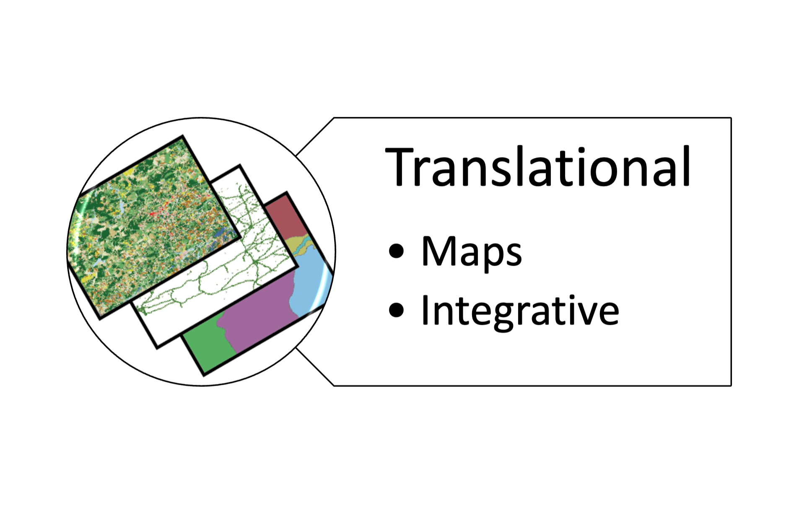
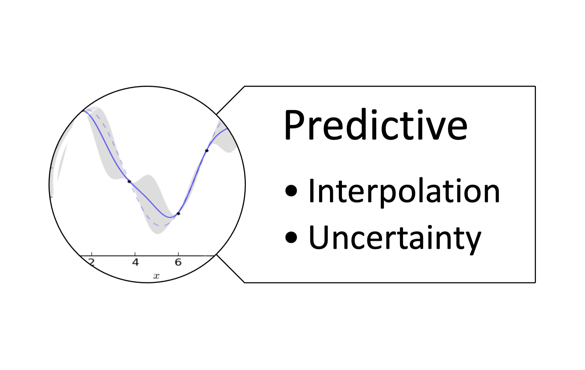
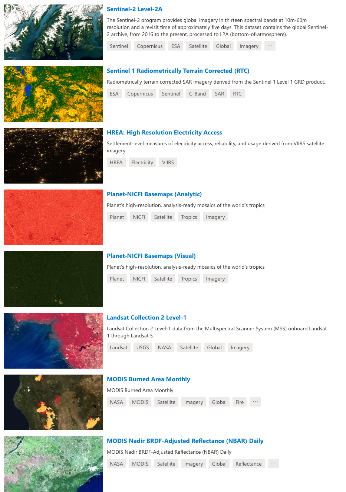
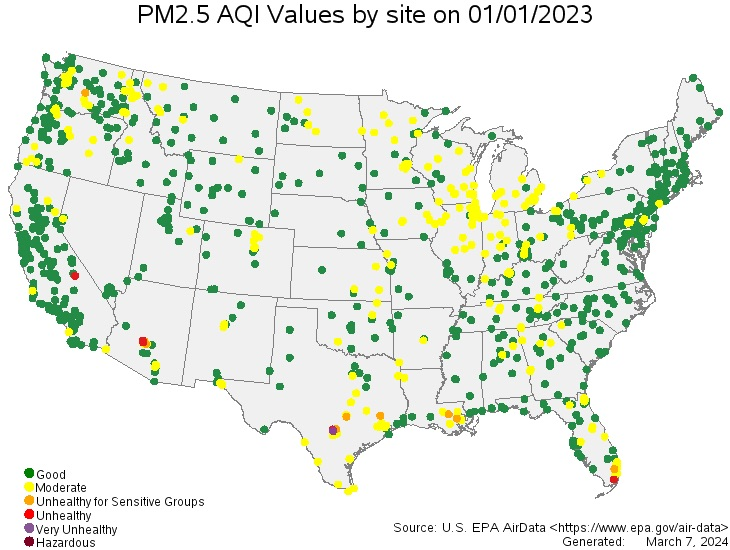
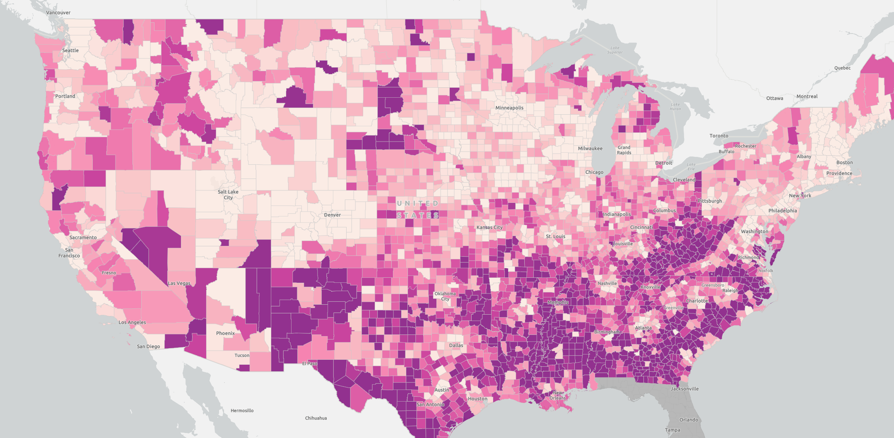
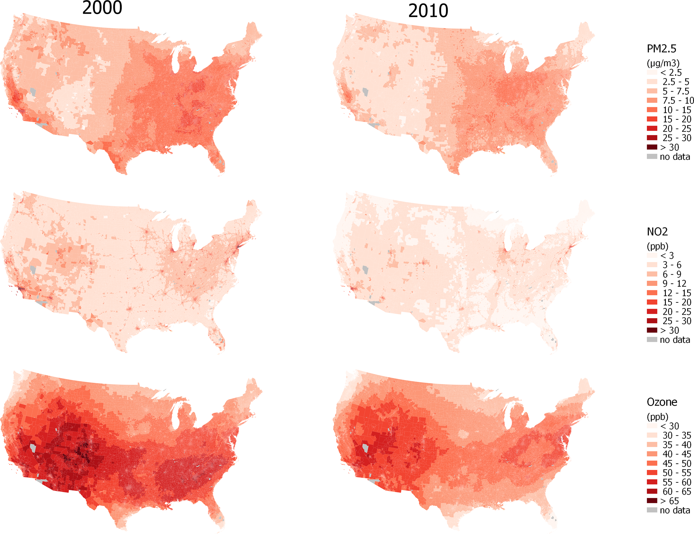
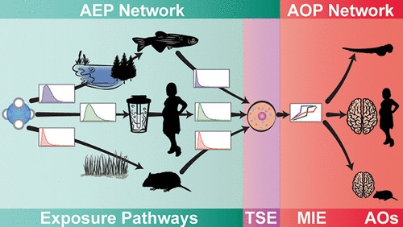
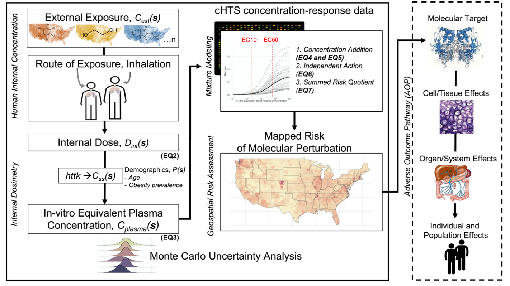
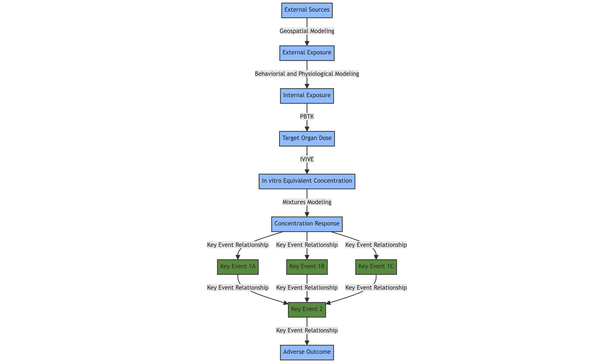

graph TB;
style P1 fill:#91bcfd , stroke:#333, stroke-width:2px, rounded:true;
style P2 fill:#91bcfd , stroke:#333, stroke-width:2px, rounded:true;
style P3 fill:#91bcfd , stroke:#333, stroke-width:2px, rounded:true;
style P4 fill:#91bcfd , stroke:#333, stroke-width:2px, rounded:true;
style P5 fill:#91bcfd , stroke:#333, stroke-width:2px, rounded:true;
style P6 fill:#91bcfd , stroke:#333, stroke-width:2px, rounded:true;
style G1 fill:#588b3e, stroke:#333, stroke-width:2px, rounded:true;
style G2 fill:#588b3e, stroke:#333, stroke-width:2px, rounded:true;
style G3 fill:#588b3e, stroke:#333, stroke-width:2px, rounded:true;
style G4 fill:#588b3e, stroke:#333, stroke-width:2px, rounded:true;
style G5 fill:#588b3e, stroke:#333, stroke-width:2px, rounded:true;
style G6 fill:#588b3e, stroke:#333, stroke-width:2px, rounded:true;
style G7 fill:#588b3e, stroke:#333, stroke-width:2px, rounded:true;
P1[Person] --> |Simulate, Sample| P2[Person, External Exposure];
G1[Group] --> |Simulate, Sample| G2[Group, External Exposure];
P2[Person, External Exposure] --> |Summarize, Simulate, Sample| G2[Group, External Exposure];
P2[Person, External Exposure] --> |Calc_Internal_Dose| P3[Person, Internal Exposure];
P3[Person, Internal Exposure] --> |Summarize| G3[Group, Internal Exposure];
G2[Group, External Exposure] --> |Calc_Internal_Dose| G3[Group, Internal Exposure];
P3[Person, Internal Exposure] --> |httk::| P4[Person, Target Organ Dose];
G3[Group, Internal Exposure]--> |httk::| G4[Group, Target Organ Dose];
P4[Person, Target Organ Dose] --> |summarize| G4[Group, Target Organ Dose];
P4[Person, Target Organ Dose] --> |calc_invitro_conc| P5[Person, Invitro Concentration];
G4[Group, Target Organ Dose]--> |calc_invitro_conc| G5[Group, Invitro Concentration];
P5[Person, Invitro Concentration] --> |summarize| G5[Group, Invitro Concentration];
P5[Person, Invitro Concentration] --> |calc_concentration_response| P6[Person, Mixture Response];
G5[Group, Invitro Concentration]--> |calc_concentration_response| G6[Group, Mixture Response];
P6[Person, Mixture Response]--> |summarize, sample, simulate| G6[Group, Mixture Response];
G6[Group, Mixture Response]--> |plot, map| G7[Group, Mixture Response];
Geospatial Methodologies in Toxicology
Linking exposure, toxicity, and disease profiles to identify U.S. regions at elevated health risks
Introduction
About Us
Spatiotemporal Exposures and Toxicology {SET} group
- Spatiotemporal Exposure Mapping
- Chemical and Stressor Mixtures Prediction
- Mechanistically Informed Geospatial Risk Assessment

Geospatial Methods


Objective
- Provide an overview of geospatial methods, data, applications, and future directions in toxicology and risk assessment
History
Mining

- Matheron and Krige developed geostatistical methods to predict ore content from core samples
- Matheron coined the term “Kriging” after Krige
- “Nugget” is a term used to random noise because predicting where gold nuggets were was so difficult
Forestry

- Matérn developed correlation models for spatial variation for applications in Forestry
- To this day, we use the “Matérn” covariance function
Petroleum Engineering

- Used to evaluate the oil and gas field reservoirs
- Uses geology and seismic data
Public Health

Cressie, 1990: Statistics for Spatial Data
Waller and Gotway, 2004: Applied Statistics for Public Health Data
Wide scale adoption for statisticians and engineers in ecological and human exposure and risk applications
Toxicology
Toxicology is a new frontier for geospatial methods
Aggregate Exposure Pathways
Adverse Outcome Pathway
GeoTox
Source-to-Outcome
Classical Models
Uses in Public Health
Estimate exposure to air pollutants, water contaminants, and other environmental stressors
Geocode patient addresses to link to environmental exposures
Estimate the spatial distribution of disease rates
Estimate the spatial distribution of health risk factors
Land Use Regression
Linear regression for spatial data
\[ Y(s) = X(s)\beta + \varepsilon \]
where \(Y(s)\) is the response variable, \(X(s)\) are the predictor variables, \(\beta\) are the regression coefficients, \(\varepsilon\) is the iid error term, and \((s)\) denotes the spatial location.
Not a terrible idea for spatial data, but it directly violates the assumption of independence of observations.
Kriging
Kriging and spatial models provide an explicit term for spatial correlation. A reasonable approach is a random-effect model:
\[ Y(s) = \mu(s) + \varepsilon + \eta(s) \] where \(\eta \sim N_n(0,\Sigma_{\theta})\)
and \(\Sigma_{\theta}\) is a covariance matrix with parameters, \(\theta\), that accounts for correlation between spatial and temporal locations
Data Sources
Common Data Sources and Types
- U.S. Census Bureau
- U.S. Environmental Protection Agency
- U.S. Geological Survey
- National Aeronautics and Space Administration
- National Oceanic and Atmospheric Administration
- U.S. Department of Agriculture
- Land cover data
- Health statistics
- Population characteristics
- Infrastructure data
- Air quality data
- Water quality data
- Satellite imagery
Satellite Imagery

Air Quality Data

Toxic Release Data

Health Information

Case Studies
Air Pollution Exposure Mapping

Tale of Two Freeways

All measured pollutants were consistently higher on I-880 compared to I-580
I-580 has a heavy duty truck ban
Heavy duty trucks are forced onto I-880 to get to the Port of Oakland
Source-to-Outcome
Source-to-Outcome Modeling

Source-to-Outcome Modeling
Source-to-Outcome is a framework for linking environmental sources to human health outcomes
The framework is based on the Aggregate Exposure Pathway (AEP) and Adverse Outcome Pathway (AOP) concepts
Source-to-Outcome Modeling
- Next generation risk of cumulative and total exposomic effects on human health
- A balance between mechanistic and translational research
- A framework for integrating multiple data sources and models
- Incorporate biological and geospatial information on communities and individuals
Getting Two Frameworks to Work Together
Aggregate Exposure Pathways
- AEP is a comprehensive external analysis of source, media, and transformations
Adverse Outcome Pathway
- AOPs provide a linkage specific biological target, pathway or process by a stressor and an adverse outcome(s) considered relevant to risk assessment
AEP-AOP

Hines, D. E., Conolly, R. B., & Jarabek, A. M. (2019)
GeoTox

Dr. Kristin Eccles, Former Visiting Fellow in DTT and SET, Now at Health Canada

GeoTox
- Goal is to develop extensible, open-source software for facilitate source-to-outcome modeling (FAIR+)
- Working with Drs. David Reif and Skylar Marvel (NIEHS/DTT)
- Submitting to CRAN
- Static website hosted via {SET}group website
- Maintained, Documented, and Supported
GeoTox

sf package for spatial data in R (Edzer Pebesma and others) (Illustration (c) 2018 by Allison Horst)
GeoTox
Conclusions
Looking Forward
The tools for each step of the source-to-outcome modeling framework are available, but the integration is still a work in progress
The integration of these tools will allow for the development of a comprehensive source-to-outcome modeling framework that can be used to assess the risk of cumulative and total exposomic effects on human health
Multiple Assays Informing an AOP

Looking Forward
Incorporate more refined information on individual and population-level susceptibility to environmental exposures
It is going to be a massive code and software development challenge
Looking Forward
- Geospatial exposures are the foundation of a spatial, total exposome risk approach
Acknowledgements
- Daniel Zilber
- Mitchell Manware
- Insang Song
- Eva Marques
- Ranadeep Daw
- Mariana Alifa Kassien
- Kristin Eccles
- Melissa Lowe
- Taylor Potter
- Alvin Sheng
- John Wambaugh
- Alison Motsinger-Reif
- David Reif
- Skylar Marvel
- Nicole Kleinstreuer
- Julia Rager